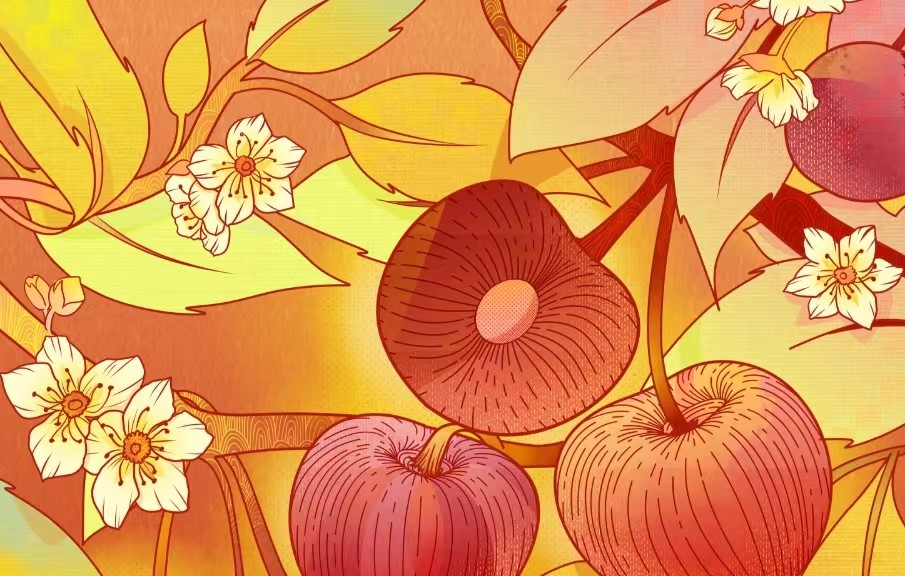
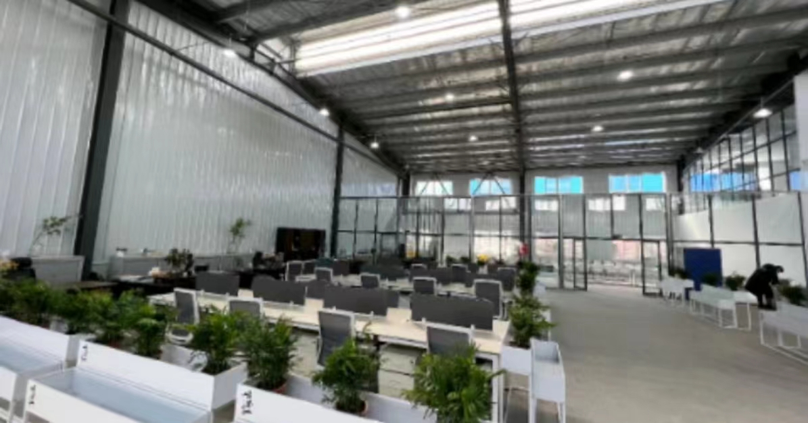

我们的宗旨


旨在探究果酒原料来源问题，助力果农创收，
提高社会关注乡村、认识乡村、投身乡村振兴的意识，
并结合保护野生动物的理念，为乡村果酒产业振兴提供云平台一站式服务，
消费者通过专有平台获取积分进行云种植水果，云种植与线下实体种植果树相对应，果实成熟后可在专有网站定制一款属于自己的果酒，平台还将赠送相关周边小礼品，助力乡村农业更好更快地发展。本项目全力推动果酒领域的销售模式改革，在口味与包装上创新，融合国风、野生动物、水果等多个元素，以其环保、健康的品牌理念打造一款独特的果酒品牌；
野生动物也是我们的好伙伴，希望希望大家通过我们网页上方相关野生动物答题更加的了解它们
通过右侧的视频，可以更加了解野生动物的生存处境